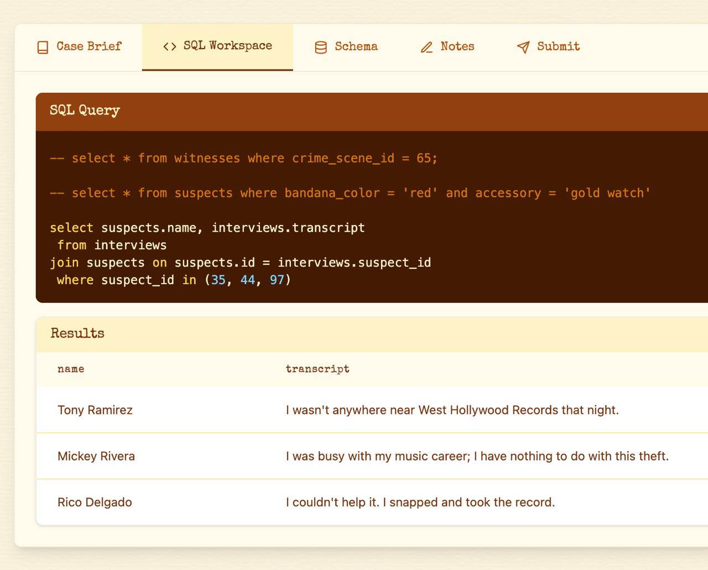

Страница 2
Несколько слов о Zettelkasten и том как я веду заметки
posted on 2025-03-24
Сегодня один из коллег во внутренней соцсети упомянул зеттелькастен и описал то свой способ ведения заметок в Sublime Text. У него довольно системный подход к тому, как заметки должны быть структурированы.
Когда-то я тоже пытался структурировать заметки, но в итоге перешел на “кучу” – заметки без структуры, с одними лишь заголовками и связями между ними.
При этом некоторые заметки – просто на какую-то определенную тему, а некоторые все же имеют “структуру” и относятся к целям и планам по методике 12 Недельного Года. Есть цели на год и планы на неделю. План на неделю – в одном файле где есть подразделы на каждый день. И в этих днях уже идет работа с тикетами и тд.
Касаемо отображения связей между заметками в виде графа – не вижу в этом большого смысла. Обычно достаточно возможности посмотреть списки входящих/исходящих ссылок. Важнее хороший поиск по заметкам и удобный способ создания кросс-ссылок.
Всё это я конечно же веду в Emacs и его замечательном режиме Org Mode. Из-за этого плагина не могу теперь слезть с Emacs на LEM.
P.S. – Кстати и этот пост изначально был написан как одна из заметок в моей "куче" :)
Обсудить пост в Telegram канале.Чем может быть полезен Yandex Workflow?
posted on 2025-03-18

Как рассказывал недавно, в последнее время смотрю разные вебинары от университета Зерокодер. И вот в одном из них показывали как бот работает в связке нескольких конструкторов:
- Puzzlebot – в нем задавались разные команды бота
- При определенной команде управление передавалось в Make.com, где был описан workflow по которому вызывался OpenAI с определенными промптами и бот таким образом обрабатывал произвольный текст от пользователя, отвечая текстом, сгенерированным с помощью ИИ.
По факту, в этом воркфлоу были блоки которые умеют обращаться по API в OpenAI, Puzzlebot (а может и напрямую в телеграм, тут я не до конца понял) + какие-то условные ветвления.
А сегодня, совершенно случайно, я узнал, что у Яндекса тоже есть lowcode инструмент для описания последовательности действий. И по странному совпадению (в закрепленном посте кстате сказано, что я не верю в совпадения, есть только связи между всем и вся!) - именно сегодня был вебинар про эту часть Яндекс Облака/
Назвывается она Yandex Workflow. В целом, выглядит годно, но пока мало интеграций, а те что есть ориентированны на другие сервисы, которые есть в Яндекс Облаке.
Хорошая новость в том, что можно дописывать блоки workflow в виде CloudFunctions – это кусочки кода которые будут запускаться по событию.
Ещё из интересного – есть поддержка блоков которые обращаются к YandexGPT. А так же интеграция с базой данных YDB.
То есть, на этой штуке вполне можно собирать части бота которым нужно сработать в определенном сценарии, сложить куда-то или передать дальше.
В рамках вебинара показывали, как собрать воркфлоу, которая создает уменьшенные версии картинок, для загружаемых в хранилище фотографий.
Кому интересно, можете посмотреть вебинар в записи на YouTube.
Обсудить пост в Telegram канале.Я очень люблю учиться. Каждый день нахожу что-то новое!
posted on 2025-03-14
Чему научился на этой неделе?
Посмотрел парочку уроков по SEO - понял как и зачем собирать слова для семантического ядра и как их потом кластеризовать.
Узнал про такую базу как Supabase. Это opensource аналог Airbase, но на базе PostgreSQL и со всеми плюшками реляционных БД + API над ним так что в базу можно ходить прямо из вебклиента или из мобильного приложения. На базе этой штуки сделан проект SQLNoir, про который я недавно писал в канале.
А ещё, на этой неделе начался курс обучения разработке чатботов от Zerocoder, но уроки первой недели не очень для меня интересны, потому что там дают базу тем, кто вообще не в курсе что такое боты, как они работают и прочее. Надеюсь, что дальше будет что-то поинтереснее, про AI, маркетинг телеграмм ботов, продвижение и тд. Буду держать вас в курсе и давать в канал еженедельные апдейты.
Кстати, ещё в тему ботов и заказной разработки вообще, сегодня закочил слушать аудио-книгу Отчаянные аккаунт-менеджеры Бориса Шпрута. Она не про IT, но про взаимодействие с клиентами. Почему я вдруг начал изучать эту тему? Да потому что для того, чтобы продвигать Common Lisp в массы, надо создавать продукты и рабочие места. А для того, чтобы создавать рабочие места, нужно основать бригаду, гильдию, компанию наконец, которая бы занималась созданием софта на CL. А для кампании важны заказчики. Книга как раз про то, как общаться с заказчиками чтобы сотрудничество были взаимовыгодным. Книга классная, рекомендую!
А у вас чего новенького? Давайте обсудим в комментариях!
Обсудить пост в Telegram канале.Сжатый курс про использование нейросетей для программирования на Python
posted on 2025-03-14

Тема не совсем про lisp, но я тут последнее время смотрю много вебинаров университета Zerocoder и сегодня они прислали рекламку нового миникурса про использование нейросетей для создания продвинутого Python бота, на который можно попасть бесплатно, если успеешь в первую 1000 откликнувшихся.
Уж не знаю насколько продвинутого бота они собираются делать, но на всякий случай записался – интересно посмотреть что выйдет.
А вообще моя мечта – научиться обучать нейросетку писать сносный код на Common Lisp. Пока что по большей части неюзабельное что-то выходит – то с синтаксисом косяки, то нейронка выдумывает несуществующие библиотеки.
Думаю на курсе как раз позадавать вопросы на тему дообучения нейронки на своих исходниках – так можно было бы обучить её на всех либах что есть в Quicklisp! Уверен, выйдет круто!
Обсудить пост в Telegram канале.Как играючи изучить SQL?
posted on 2025-03-11

Сегодня случайно наткнулся на проект, в котором предлагается изучать SQL в виде игры в детектива. Проект называется SQL Noir.
🕵️ В каждом уроке тебе предлагается расследовать преступление, кражу убийство и тд. Дается некоторая вводная и предварительное направление поисков. А сами поиски предлагается делать исследуя данные в базе данных с помощью запросов. Запросы можно прямо на сайте делать и тут же видеть результат. В базе отдельные таблички с описанием разных мест, персонажей, улик и так далее.
Первые уроки довольно тривиальные. Да и всего в проекте пока только 4 урока. Однако к добавлению новых криминальных драм приглашаются все желающие. У ребят на GitHub довольно подробно описано, как добавить новый детективный сценарий в эту игру.
Думаю такое может быть интересно в первую очередь полным новичкам, и быть может даже детям. В школах SQL уже преподают?
Обсудить пост в Telegram канале.Как учить неправильные глаголы с помощью нейросети?
posted on 2025-03-02

В прошлом посте я писал про универ Зерокодер и то как их вебинар мне открыл глаза на использование нейросетей. Так вот на прошедшей неделе я прошел их интенсив по созданию чатботов на основе ИИ на одном из уроков которого увидел ещё один интересный кейс.
Оказывается, в некоторые нейронки встроен так называемый "канвас" - это такая песочница, где нейронка сразу может запустить код который создала. К примеру китайская нейросеть Qwen в таком режиме пишет код HTML странички и тут же рендерит его сбоку. При этом пишет не только HTML, но и CSS + JavaScript.
Но это все преамбула, а было всё так:
В среду прихожу я домой, а жена с порога заявляет: "Иди поучи неправильные глаголы с сыном, завтра у него контрольная."
А я отвечаю: "Cпокойно, сейчас мы научим нейросеть учить сына английскому!"
И вот, открываем с ним Qwen, и через полчаса у нас готово веб-приложение, которое тестирует знание неправильных глаголов прям в интерфейсе нейросети!
Конечно понадобилось несколько итераций, чтобы улучшить работу приложения. Например изначально оно содержало всего 5 глаголов, но я нашел в сети PDF со всеми неправильными глаголами английского языка и сетка за полминуты переписала код. Я даже решил опубликовать это приложение на GitHub, и теперь учить с ним глаголы может каждый. Вот, попробуйте сами!
При этом мы не написали ни строчки кода. А уж какой эффект это произвело на ребенка! Он тут же принялся пробовать с помощью Qwen делать игры наподобии Geometry Dash, Five Nights at Freddy и Minecraft :)
Короче, нейронки рулят!
Обсудить пост в Telegram канале.Бот-учитель по Python
posted on 2025-03-02
В описании канала 40Ants сказано, что я верю в то, что в мире всё связано и не бывает случайностей. Или, как говорил О.Ж. Грант в фильме "Автострада 60": "Если что-то произошло, оно было неизбежно."
Последнее время я интересуюсь темой автоматизации разных задач с помощью ботов. И вот, по какой-то "случайности" (случано ли?) мне удалось бесплатно залететь на интенсив по созданию ИИ ботов от университета Зерокодер. Интенсив прошел на прошлой неделе, а сегодня хочу с вами поделиться впечатлениями.
🤓 Как работает ИИ бот.
- Вы пишете промпт - текст очерчивающий задачу бота и инструкции как он должен действовать.
- Опционально можете добавить какие-нибудь данные, например PDF с описанием компании, данные о контактах сотрудников, типовые вопросы и ответы.
- Далее бот на каждую реплику пользователя берет промпт, все данные + N последних записей из переписки с клиентом и отдает их нейронке.
- Ответ нейронки отправляется пользователю.
🤨 Что меня удивило.
- Сам промпт для ИИ бота тоже можно сгенерировать с помощью нейронки, а потом лишь немного подредактировать. Пишешь нейронке: "Напиши промпт для ИИ бота который будет делать то-то то-то" и вуаля, у вас готовая "рыба"!
- Базу данных, например типовые вопросы пользователей на заданную тему и ответы на них - тоже можно сгенерировать нейронкой. Конечно по хорошему текст надо будет перепроверить.
☹️ Что пока непонятно.
Мы делали бота на конструкторе Suvvy и там бот может иметь интеграции. Например он может заводить клиента в CRM или записывать его на прием, добавляя встречу в Google Calendar. Так вот я пока не очень понимаю, как бот решает, что клиент хочет записаться на прием. Возможно при активации интеграции Suvvy добавляет что-то в промпт?
😎 Бот который у меня получился в ходе интенсива.
Я делал бота, который помогает изучать Python: https://t.me/guru_of_python_bot Можете тут с ним пообщаться (будет активен до 5 марта, дальше закончится пробный период в Suvvy).
😱 Проблемы с которыми можно столкнуться.
Работа ИИ бота созданного на конструкторе стоит денег. К примеру, обработка каждого вопроса ученика моим ботом-учителем по Python стоит от 3 до 6 рублей. Если ученик задал 100 вопросов, то он обошелся вам в 600 рублей. Так что для бота который предоставляется бесплатно это не очень подходит. Другое дело, если вы создаете коммерческого бота, который к примеру обрабатывает заявки клиентов - отвечает на пару их вопросов и записывает на прием. Тут и количество вопросов в сессии скорее всего будет ограничено, и количество денег которые принесет клиент компании будет значительно превышать оплату за работу бота. Короче, надо внимательно считать.
Так же в Savvy бот иногда может работать с ошибками и кажется там пока нет какого-то монитонига, есть только лог общения бота с клиентом.
🤔 Что дальше.
Тема ботов интересная, но понятно, что если делать на этом бизнес, то желательно поискать решение которое получится развернуть на своем сервере. Это позволит лучше контролировать его работу, возможно сделает дешевле обработку каждого сообщения и в случае если заказчик пожелает - позволит развернуть бота на его серверах.
Self-hosted решений для создания AI ботов наверное много, но пока что я накопал только Python библиотечку Rasa. Судя по описанию, боты в ней могу определять намеряние пользователя и действовать соответственно. Буду пробовать.
К чему это? Перед тем как создавать свою платформу для создания ботов, хочу исследовать как работают существующие решения.
Если знаете ещё конструкторы которые допускают self-hosted режим, напишите пожалуйста про них в комментариях к посту?
Обсудить пост в Telegram канале.Продолжение про нейросети и умный дом
posted on 2025-03-01

Недавно я решил погрузиться в тему умного дома, вдохновившись интенсивом по нейросетям от Зерокода. Этот курс открыл мне глаза на то, как много задач можно решать с помощью нейросетей — от создания ботов до разработки веб-сайтов. И я подумал: а почему бы не использовать нейросети для проектирования умного дома? В прошлом посте я лишь намекнул на эту идею, а теперь готов рассказать, что из этого вышло.
Начну с того, что изначально я даже не знал, чем заменить Home Assistant. Меня не устроило, что эта система диктует, какая операционная система должна быть установлена на Raspberry Pi. Мне хотелось больше гибкости и контроля над процессом. Поэтому я решил пойти другим путём и привлечь нейросети к проектированию системы умного дома.
Сначала я сформулировал десяток сценариев, которые должна была решать моя система. Среди них были сбор данных с датчиков, построение графиков, удалённый доступ к этим данным, а также более специфические задачи, например, обнаружение утечек воды. После этого я приступил к работе с нейросетью DeepSeek.
Я начал с того, что описал роль нейросети: она должна была помогать мне проектировать умный дом. Также я сразу обозначил ограничения: не использовать Home Assistant и разворачивать систему на Raspberry Pi. На иллюстрации к тому посту промпт, который я задал нейросети, чтобы проектировать умный дом. Уже сразу на этот промпт я получил в ответ рекомендации, на каких технологиях можно собрать нужное мне решение.
Далее я закидывал в нейронку сценарии, которые мой умный дом должен решать, а она в ответ описывала, какие компоненты понадобятся и как их настроить чтобы получить желаемое.
Ещё порадовало то, что когда я спросил в чем разница между OpenHab и Node-RED, DeepSeek не только текстом описал их различия, но и составил сводную таблицу где сравнил фичи обоих решений. Так я понял, что мои сложные сценарии придется реализовывать на Node-RED. Самое крутое то, что не приходится собирать информацию по десяткам статей, и можно получить только нужное в данный момент уже собранное и проанализированное.
В общем, нейросети – топ. И спасибо онлайн университету Zerocoder за вдохновляющий интенсив. Кстати, порой они устраивают такие интенсивы бесплатно - следите за новостями на их сайте или канале.
Обсудить пост в Telegram канале.Go развиртуализироваться в Питере!
posted on 2025-02-23
Прямо сейчас я еду в Питер и примерно с 15:00 до 20:00 буду свободен.
Я уже договорился с Андрэ Гомесом (если кто не знает, это один из разработчиков браузера Nyxt), и с 15 часов мы будем вот в этом кафе Мама Рома:
https://yandex.ru/maps/-/CHu6bT21
Там и пицца вкусная и пиво/вино тоже есть.
Приглашаю присоединиться всех желающих!
Обсудить пост в Telegram канале.Как нейросети строить умный дом помогают!
posted on 2025-02-22
Раньше я почему-то считал, что нейросети годны только чтобы тексты и картинки генерить, но недавно посмотрел пару вебинаров про то, какие ещё задачи можно решать с помощью LLM и прям воодушевился! Один из возможных сценариев использования ChatGPT, который там приводился, это использовать нейросеть в роли учителя. При чём не важно в какую тему хочешь погрузиться, математика это, программирование или ещё что-то. Главное что она умеет корректироваться и отвечать на дополнительные вопросы. Хотя конечно и лажу может генерить, тут уж принцип "доверяй но проверяй" никто не отменял.
Короче, одна из тем до которой у меня пока не доходят руки, это настройка умного дома. Когда-то у меня уже была небольшая инсталляция HomeAssistant на RaspberryPi, но когда я решил её обновить, оказалось что проще собрать всё заново. Однако я с удивлением обнаружил, что теперь HomeAssistant уже так просто не накатишь на ванильную Raspberry Pi OS - он теперь хочет налить на флешку свой собственный образ операционки, заточенный именно под запуск HomeAssistant.
Мне же хотелось чтобы OS была базовой и на неё можно было ставить разные другие пакеты. Так что я стал думать чем заменить HomeAssistant. Нашел что есть OpenHAB. Затем мне попалась на глаза аббревиатура MING, обозначающая связку MQTT, InfluxDB, Node-RED и Grafana. Стало непонятно, все эти штуки ставятся в дополнение к OpenHAB или вместо.
И ещё у меня уже накопился приличный список сценариев использования, которые хотелось бы реализовать, и было не очень понятно, оно реализуемо на данных технологиях, или нужно что-то ещё.
Повезло, что сегодня выдался относительно свободный день и я наконец решил собрать что-то работающее. Но как правильно собирать - не знал. Тут-то и пригодился диалоговый режим с нейросеткой. Я решил попробовать новую LLM DeepSeek, благо что в России она доступна без VPN и к тому же совершенно бесплатно.
Но что из этого вышло, вы узнаете в следующем посте :)
Обсудить пост в Telegram канале.Created with passion by 40Ants